Site-wide buy buttons: before / after
Every buying button now matches the product page add-to-cart: yellow with dark text, Geist 12px caps, 0.12em letter spacing, 8px corners, black sweep from the left on hover. Other actions (Continue shopping, Notify me, filters) are white with a dark outline in the same type. Small cart icons on cards keep their grey and turn yellow on hover.
Cart page: Check out
Same button as the product page: Geist 12px caps, no lock icon, black sweep on hover. Continue shopping under it is now white with a dark outline.

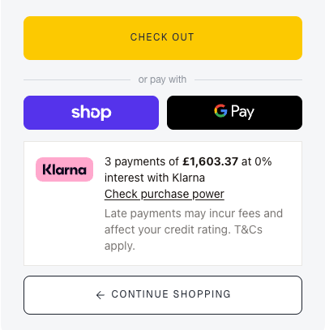

Continue shopping, hover
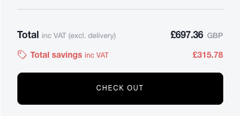
Check out, hover
Side cart: View full cart
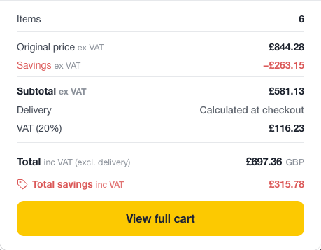

Phone: cart bottom bar and small Continue shopping
The small Continue shopping at the top shows on narrower screens.
(no earlier screenshot)


Narrow screens: top of the cart
Empty cart: Continue shopping
Was a big yellow button; now the secondary style (white, dark outline).
(no earlier screenshot)
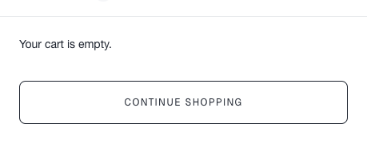
Collection / search / Shop Similar cards: cart icon
Icon keeps its grey line; turns yellow on hover, black once added.
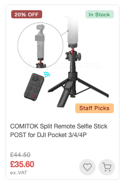

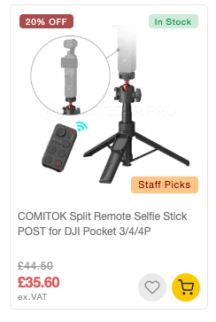
Hover
Homepage product lists: cart icon
Same rule as the other cards.
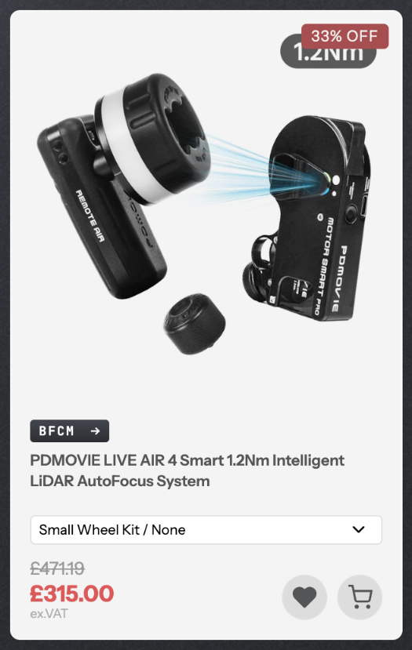


Hover
Product page: Recommended Accessories
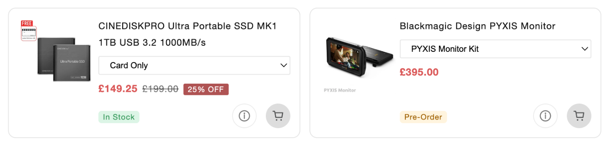
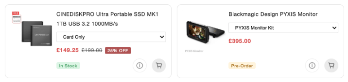

Hover (left card)
Black Friday Top Deals: Add to cart
Was a slightly different yellow and extra bold; now the same as everywhere else.
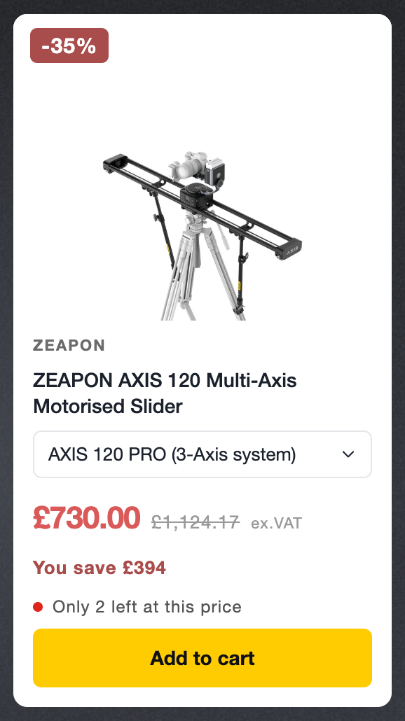

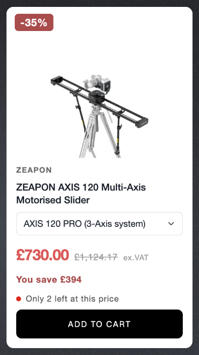
Hover
Bundle popup (from "N Bundles" on cards)
(no earlier screenshot)


Hover
Wishlist page
Buying (Add to cart, Add all in stock to cart) is yellow; other actions are white with a dark outline.
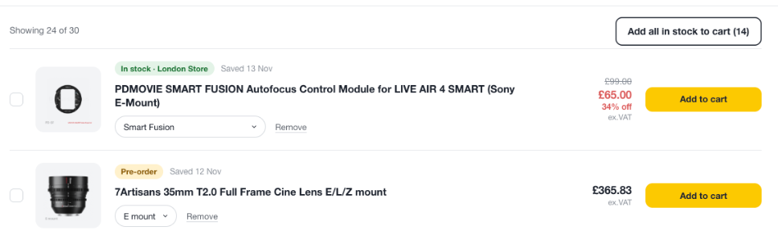

Wishlist: sold-out item
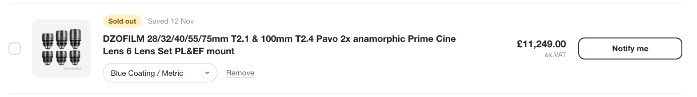
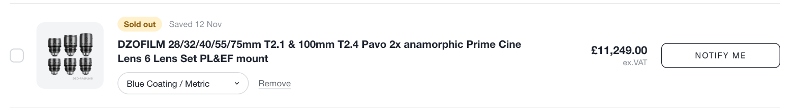
Cart page: Saved for later
Move to cart is yellow, Notify me is outlined. (Sample rows for the preview.)
(no earlier screenshot)

Sold-out product: Notify me when available
Was dark grey with white Arial; now the outlined secondary style.


Checkout page (still to do)